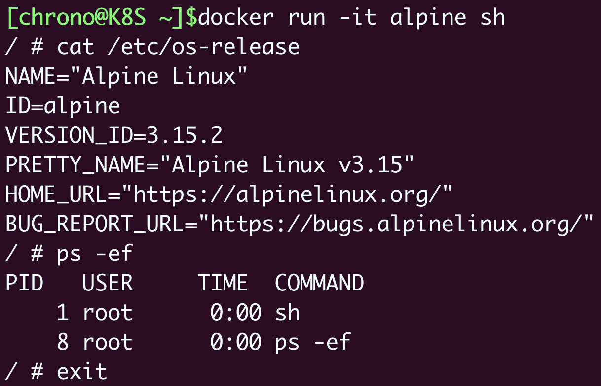

- 00 开篇词 迎难而上，做云原生时代的弄潮儿.md.html
- 00 课前准备 动手实践才是最好的学习方式.md.html
- 01 初识容器：万事开头难.md.html
- 02 被隔离的进程：一起来看看容器的本质.md.html
- 03 容器化的应用：会了这些你就是Docker高手.md.html
- 04 创建容器镜像：如何编写正确、高效的Dockerfile.md.html
- 05 镜像仓库：该怎样用好Docker Hub这个宝藏.md.html
- 06 打破次元壁：容器该如何与外界互联互通.md.html
- 07 实战演练：玩转Docker.md.html
- 08 视频：入门篇实操总结.md.html
- 09 走近云原生：如何在本机搭建小巧完备的Kubernetes环境.md.html
- 10 自动化的运维管理：探究Kubernetes工作机制的奥秘.md.html
- 11 YAML：Kubernetes世界里的通用语.md.html
- 12 Pod：如何理解这个Kubernetes里最核心的概念？.md.html
- 13 Job_CronJob：为什么不直接用Pod来处理业务？.md.html
- 14 ConfigMap_Secret：怎样配置、定制我的应用.md.html
- 15 实战演练：玩转Kubernetes（1）.md.html
- 16 视频：初级篇实操总结.md.html
- 17 更真实的云原生：实际搭建多节点的Kubernetes集群.md.html
- 18 Deployment：让应用永不宕机.md.html
- 19 Daemonset：忠实可靠的看门狗.md.html
- 20 Service：微服务架构的应对之道.md.html
- 21 Ingress：集群进出流量的总管.md.html
- 22 实战演练：玩转Kubernetes（2）.md.html
- 23 视频：中级篇实操总结.md.html
- 24 PersistentVolume：怎么解决数据持久化的难题？.md.html
- 25 PersistentVolume + NFS：怎么使用网络共享存储？.md.html
- 26 StatefulSet：怎么管理有状态的应用？.md.html
- 27 滚动更新：如何做到平滑的应用升级降级？.md.html
- 28 应用保障：如何让Pod运行得更健康？.md.html
- 29 集群管理：如何用名字空间分隔系统资源？.md.html
- 30 系统监控：如何使用Metrics Server和Prometheus？.md.html
- 31 网络通信：CNI是怎么回事？又是怎么工作的？.md.html
- 32 实战演练：玩转Kubernetes（3）.md.html
- 33 视频：高级篇实操总结.md.html
- 加餐 docker-compose：单机环境下的容器编排工具.md.html
- 加餐 谈谈Kong Ingress Controller.md.html
- 结束语 是终点，更是起点.md.html
- 捐赠
02 被隔离的进程：一起来看看容器的本质
你好，我是Chrono。
在上一次课里，我们初步了解了容器技术，在Linux虚拟机里安装了当前最流行的容器Docker，还使用 docker ps、docker run等命令简单操作了容器。
广义上来说，容器技术是动态的容器、静态的镜像和远端的仓库这三者的组合。不过，“容器”这个术语作为容器技术里的核心概念，不仅是大多数初次接触这个领域的人，即使是一些已经有使用经验的人，想要准确地把握它们的内涵、本质都是比较困难的。
那么今天，我们就一起来看看究竟什么是容器（即狭义的、动态的容器）。
容器到底是什么
从字面上来看，容器就是Container，一般把它形象地比喻成现实世界里的集装箱，它也正好和Docker的现实含义相对应，因为码头工人（那只可爱的小鲸鱼）就是不停地在搬运集装箱。

集装箱的作用是标准化封装各种货物，一旦打包完成之后，就可以从一个地方迁移到任意的其他地方。相比散装形式而言，集装箱隔离了箱内箱外两个世界，保持了货物的原始形态，避免了内外部相互干扰，极大地简化了商品的存储、运输、管理等工作。
再回到我们的计算机世界，容器也发挥着同样的作用，不过它封装的货物是运行中的应用程序，也就是进程，同样它也会把进程与外界隔离开，让进程与外部系统互不影响。
我们还是来实际操作一下吧，来看看在容器里运行的进程是个什么样子。
首先，我们使用 docker pull 命令，拉取一个新的镜像——操作系统Alpine：
docker pull alpine
然后我们使用 docker run 命令运行它的Shell程序：
docker run -it alpine sh
注意我们在这里多加了一个 -it 参数，这样我们就会暂时离开当前的Ubuntu操作系统，进入容器内部。
现在，让我们执行 cat /etc/os-release ，还有 ps 这两个命令，最后再使用 exit 退出，看看容器里与容器外有什么不同：

就像这张截图里所显示的，在容器里查看系统信息，会发现已经不再是外面的Ubuntu系统了，而是变成了Alpine Linux 3.15，使用 ps 命令也只会看到一个完全“干净”的运行环境，除了Shell（即sh）没有其他的进程存在。
也就是说，在容器内部是一个全新的Alpine操作系统，在这里运行的应用程序完全看不到外面的Ubuntu系统，两个系统被互相“隔离”了，就像是一个“世外桃源”。
我们还可以再拉取一个Ubuntu 18.04的镜像，用同样的方式进入容器内部，然后执行 apt update、apt install 等命令来看看：
docker pull ubuntu:18.04
docker run -it ubuntu:18.04 sh
# 下面的命令都是在容器内执行
cat /etc/os-release
apt update
apt install -y wget redis
redis-server &
这里我就不截图了，具体的结果留给你课下去实际操作体会。可以看到的是，容器里是另一个完整的Ubuntu 18.04 系统，我们可以在这个“世外桃源”做任意的事情，比如安装应用、运行Redis服务等。但无论我们在容器里做什么，都不会影响外面的Ubuntu系统（当然不是绝对的）。
到这里，我们就可以得到一个初步的结论：容器，就是一个特殊的隔离环境，它能够让进程只看到这个环境里的有限信息，不能对外界环境施加影响。
那么，很自然地，我们会产生另外一个问题：为什么需要创建这样的一个隔离环境，直接让进程在系统里运行不好吗？
为什么要隔离
相信因为这两年疫情，你对“隔离”这个词不会感觉到太陌生。为了防止疫情蔓延，我们需要建立方舱、定点医院，把患病人群控制在特定的区域内，更进一步还会实施封闭小区、关停商场等行动。虽然这些措施带来了一些不便，但都是为了整个社会更大范围的正常运转。
同样的，在计算机世界里的隔离也是出于同样的考虑，也就是系统安全。
对于Linux操作系统来说，一个不受任何限制的应用程序是十分危险的。这个进程能够看到系统里所有的文件、所有的进程、所有的网络流量，访问内存里的任何数据，那么恶意程序很容易就会把系统搞瘫痪，正常程序也可能会因为无意的Bug导致信息泄漏或者其他安全事故。虽然Linux提供了用户权限控制，能够限制进程只访问某些资源，但这个机制还是比较薄弱的，和真正的“隔离”需求相差得很远。
而现在，使用容器技术，我们就可以让应用程序运行在一个有严密防护的“沙盒”（Sandbox）环境之内，就好像是把进程请进了“隔离酒店”，它可以在这个环境里自由活动，但绝不允许“越界”，从而保证了容器外系统的安全。
另外，在计算机里有各种各样的资源，CPU、内存、硬盘、网卡，虽然目前的高性能服务器都是几十核CPU、上百GB的内存、数TB的硬盘、万兆网卡，但这些资源终究是有限的，而且考虑到成本，也不允许某个应用程序无限制地占用。
容器技术的另一个本领就是为应用程序加上资源隔离，在系统里切分出一部分资源，让它只能使用指定的配额，比如只能使用一个CPU，只能使用1GB内存等等，就好像在隔离酒店里保证一日三餐，但想要吃山珍海味那是不行的。这样就可以避免容器内进程的过度系统消耗，充分利用计算机硬件，让有限的资源能够提供稳定可靠的服务。
所以，虽然进程被“关”在了容器里，损失了一些自由，但却保证了整个系统的安全。而且只要进程遵守隔离规定，不做什么出格的事情，也完全是可以正常运行的。
与虚拟机的区别是什么
你也许会说，这么看来，容器不过就是常见的“沙盒”技术中的一种，和虚拟机差不了多少，那么它与虚拟机的区别在哪里呢？又有什么样的优势呢？
在我看来，其实容器和虚拟机面对的都是相同的问题，使用的也都是虚拟化技术，只是所在的层次不同，我们可以参考Docker官网上的两张图，把这两者对比起来会更利于学习理解。

（Docker官网的图示其实并不太准确，容器并不直接运行在Docker上，Docker只是辅助建立隔离环境，让容器基于Linux操作系统运行）
首先，容器和虚拟机的目的都是隔离资源，保证系统安全，然后是尽量提高资源的利用率。
之前在使用VirtualBox/VMware创建虚拟机的时候，你也应该看到了，它们能够在宿主机系统里完整虚拟化出一套计算机硬件，在里面还能够安装任意的操作系统，这内外两个系统也同样是完全隔离，互不干扰。
而在数据中心的服务器上，虚拟机软件（即图中的Hypervisor）同样可以把一台物理服务器虚拟成多台逻辑服务器，这些逻辑服务器彼此独立，可以按需分隔物理服务器的资源，为不同的用户所使用。
从实现的角度来看，虚拟机虚拟化出来的是硬件，需要在上面再安装一个操作系统后才能够运行应用程序，而硬件虚拟化和操作系统都比较“重”，会消耗大量的CPU、内存、硬盘等系统资源，但这些消耗其实并没有带来什么价值，属于“重复劳动”和“无用功”，不过好处就是隔离程度非常高，每个虚拟机之间可以做到完全无干扰。
我们再来看容器（即图中的Docker），它直接利用了下层的计算机硬件和操作系统，因为比虚拟机少了一层，所以自然就会节约CPU和内存，显得非常轻量级，能够更高效地利用硬件资源。不过，因为多个容器共用操作系统内核，应用程序的隔离程度就没有虚拟机那么高了。
运行效率，可以说是容器相比于虚拟机最大的优势，在这个对比图中就可以看到，同样的系统资源，虚拟机只能跑3个应用，其他的资源都用来支持虚拟机运行了，而容器则能够把这部分资源释放出来，同时运行6个应用。

当然，这个对比图只是一个形象的展示，不是严谨的数值比较，不过我们还可以用手里现有的VirtualBox/VMware虚拟机与Docker容器做个简单对比。
一个普通的Ubuntu虚拟机安装完成之后，体积都是GB级别的，再安装一些应用很容易就会上到10GB，启动的时间通常需要几分钟，我们的电脑上同时运行十来个虚拟机可能就是极限了。而一个Ubuntu镜像大小则只有几十MB，启动起来更是非常快，基本上不超过一秒钟，同时跑上百个容器也毫无问题。
不过，虚拟机和容器这两种技术也不是互相排斥的，它们完全可以结合起来使用，就像我们的课程里一样，用虚拟机实现与宿主机的强隔离，然后在虚拟机里使用Docker容器来快速运行应用程序。
隔离是怎么实现的
我们知道虚拟机使用的是Hypervisor（KVM、Xen等），那么，容器是怎么实现和下层计算机硬件和操作系统交互的呢？为什么它会具有高效轻便的隔离特性呢？
其实奥秘就在于Linux操作系统内核之中，为资源隔离提供了三种技术：namespace、cgroup、chroot，虽然这三种技术的初衷并不是为了实现容器，但它们三个结合在一起就会发生奇妙的“化学反应”。
namespace是2002年从Linux 2.4.19开始出现的，和编程语言里的namespace有点类似，它可以创建出独立的文件系统、主机名、进程号、网络等资源空间，相当于给进程盖了一间小板房，这样就实现了系统全局资源和进程局部资源的隔离。
cgroup是2008年从Linux 2.6.24开始出现的，它的全称是Linux Control Group，用来实现对进程的CPU、内存等资源的优先级和配额限制，相当于给进程的小板房加了一个天花板。
chroot的历史则要比前面的namespace、cgroup要古老得多，早在1979年的UNIX V7就已经出现了，它可以更改进程的根目录，也就是限制访问文件系统，相当于给进程的小板房铺上了地砖。
你看，综合运用这三种技术，一个四四方方、具有完善的隔离特性的容器就此出现了，进程就可以搬进这个小房间，过它的“快乐生活”了。我觉得用鲁迅先生的一句诗来描述这个情景最为恰当：躲进小楼成一统，管他冬夏与春秋。
小结
好了，今天我们一起学习了容器技术中最关键的概念：动态的容器，再简单小结一下课程的要点：
- 容器就是操作系统里一个特殊的“沙盒”环境，里面运行的进程只能看到受限的信息，与外部系统实现了隔离。
- 容器隔离的目的是为了系统安全，限制了进程能够访问的各种资源。
- 相比虚拟机技术，容器更加轻巧、更加高效，消耗的系统资源非常少，在云计算时代极具优势。
- 容器的基本实现技术是Linux系统里的namespace、cgroup、chroot。
课下作业
最后是课下作业时间，给你留两个思考题：
- 你能够对比现实中的集装箱，说出容器技术更多的优点吗？
- 有一种说法：容器就是轻量级的虚拟机，你认为这种说法正确吗？
欢迎在留言区发言参与讨论，如果你觉得有收获，也欢迎转发给身边的朋友一起学习。我们下节课见。

© 2019 - 2023 Liangliang Lee. Powered by gin and hexo-theme-book.